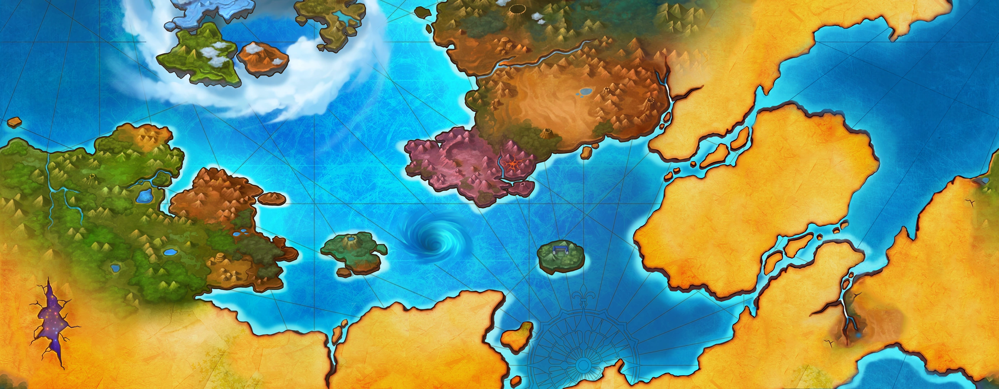

About the Game
Grand Chase (Korean: 그랜드체이스, lit. Grand Chase) is a free-to-play, two-dimensional side-scrolling MMORPG developed by the South Korean company KOG Studios. Alternative names for Grand Chase include 3小俠 (Three Young Heroes) used on the Taiwan server but was changed to 永恆冒險 (Eternal Adventures). Another name used was 彩虹骑士 (Rainbow Warriors) on the Mainland Chinese server. The reopening of the server also used the name of the Taiwan and Hong Kong server.
As of April 15, the game ceased development and terminated its service worldwide, with North America being the last foreign server to close in 2015. The mobile sequel Grand Chase Dimensional Chaser was launched in January 2018.
6 years after the closure, the game's return, now known as GrandChase Classic, has been announced in 2021 on Steam. Recruitment for Global CBT Testers was held from June 30 to July 8 and officially relaunched on July 28.
Grand Chase was awarded as Indonesia's most popular online game in August 2011 and has spawned several spin-off games such as Grand Chase Lite and Grand Chase M. It was also considered the "national online game" of Brazil.
ELSWORD, another game developed by KOG, was regarded as the spiritual successor to Grand Chase, having subtle references within the story, such as using Elesis as a new character in the game.
History
The Story Timeline expands the chronological table of Grand Chase history that was provided by KOG Studios and summarizes all known events within the Grand Chase universe. It includes the jobs' backgrounds, passages from missions, and stories that were omitted after the story revamp but do not contradict the established lore, attempting to organize all of them in chronological order. For any inconsistencies found, whether a retcon or mistake on KOG's part, newer information is preferred.
While some stories happened in an unspecified time, those that were indicated or hinted to happen between certain events will be placed accordingly. However, events in the manhwa cannot be inserted due to having a different narrative from the game.
NOTE: This article is currently under development. The events in Grand Chase Dimensional Chaser will not be included, however, the chronology of events is subject to change depending on the progression of the story in the sequel game.
Six centuries ago the First Magical War took place, in which demonic tribes from another dimension attacked the kingdom of Calnat, in the legendary land of Archimedia. Calnat was the most developed human kingdom of all, mixing magic and technology like never before.[25] After countless battles, the war came to an end when a gigantic explosion completely destroyed Calnat, leaving no trace of its once advanced civilization.
Although the demonic tribes disappeared along with the destruction of Calnat, the void left by the most powerful kingdom of humans allowed dozens of monsters to thrive. Taking advantage of this situation, Cazeaje, the Queen of Darkness, gathered the forces of darkness and began her campaign to dominate the world. She was stopped by a young hero from the Kanban kingdom, known as the greatest hero of Vermécia, who sacrificed himself to seal the dark power of Cazeaje.
After these events, the world prospered in relative peace. Although rumors say that in Archimedia conflicts never ceased and that the elven civilization continued at war with the dwarven kingdom, as humans lost contact with this region after the destruction of Calnat, these stories became legends and tales of fairies.
On the continent of Vermécia, humans lived in harmony with the local elves, who preferred to isolate themselves in their forests and islands, far from the civilization that was once again growing and expanding. Humans were divided between two kingdoms: Serdin, which explored the path of magic, and Canaban, famous for its heroes and powerful warriors. Peace was sealed by vows of friendship between these peoples.
But one fine day, in the kingdom of Canaban, Cazeaje resurfaced, seeking revenge on the humans who imprisoned her in the past. After murdering the most loyal servant of the king of Canaban, she assumed his appearance and position of trust. Under this guise, Cazeaje slowly began to inspire the kingdom's rulers with promises of great conquests, power, and glory. And Canaban began to walk the path of darkness.
Seeking to expand its borders and unknowingly influenced by Cazeaje, the Canaban kingdom invaded Serdin, starting a war that lasted five years and devastated Vermécia. Villages were destroyed, many lives were lost and several heroes fell in historic battles. Even the elves and dwarves left their homes to defend Serdin, but the Kanban army was relentless. During the greatest battle between the two kingdoms, Cazeaje finally revealed his disguise and took the life of the king of Serdin.
Upon seeing his former friend dead and discovering Cazeaje's betrayal, the king of Canaban was overcome by boundless fury and tried to confront the traitor. However, this was part of the Dark Queen's plan, who was already prepared for the king's attack and easily took her life, disappearing from the battlefield soon after and leaving both kingdoms in ruin and without a sovereign. It was the end of the war between the two kingdoms, but humans had little to celebrate in the face of so much tragedy.
In Serdin, shortly after the end of the battles that destroyed the kingdom, several monsters appeared, causing fear in the population and spreading chaos. Forests and cities were destroyed by the attacks of these unknown creatures. Still shaken by the death of her husband, the queen of Serdin received news brought by the greatest wizards in the kingdom: Cazeaje, the Queen of Darkness, was once again gathering a large army of monsters under her control to once again try to dominate the world.
The queen of Serdin sought the support of the queen of Canaban and once again peace was reestablished in Vermécia, which now faced attacks from monsters. As Canaban and Serdin began to rebuild themselves and prepare their armies against the forces of evil, the queens decided that an elite group should be created with the greatest warriors from the two kingdoms.
Unfortunately, the warriors of both kingdoms were weakened by the war. That's why Commander Lothos, in charge of the mission, decided to recruit newcomers with a lot of potential, and begin the training that would shape Vermécia's future heroes. Three young people were then summoned and began the great hunt to find Cazeaje and put an end to his evil once and for all. This is how the Grand Chase troop was founded.
World

Aernas is the main setting of Grand Chase. It is a material world populated primarily by mortal beings such as humans, elves, and dwarves. Aernas has two major continents, Bermesiah and Ellia, with each featuring several regions. Another notable continent is the floating archipelago of Xenia where Silver Land, which is situated between the Kanavan territories and the peninsula of Ellia, was previously a part of.
With the original game reopening as GrandChase Classic, Aernas becomes the first world map that players explore followed by the newly added content expansion, Another World.Aernas is simply one of many earthly realms in the vast array of dimensional worlds. Before the gods came, the world was inhabited by primitive humans, elves, and dwarves who had only just begun to establish their tribal communities.
It was given its name "Aernas" in honor of the deity Ernasis, the gods' representative to the world. It is also a parallel dimension to the Underworld, the realm of the dead.
Before Kounat was christened, the deities Ernasis, the Goddess of war and bravery, Lisnar, the Goddess of love and spirits, and Amenias, the Goddess of wisdom and harmony, descended to Archimedia. They chose humans, the most courageous and imaginative of all species, with which they would codevelop society. Together, they brought many sorts of life to the core region of Archimedia and formed a civilization of Celestials.
As a consequence of Baldinar's actions, the barriers separating the world from the different dimensions have weakened and continued to degrade, and the gaps connecting Aernas to the Underworld and other realms, such as the Demon World of Elyos, have steadily widened through time.
After the Great Explosion of Kounat, the continent of Xenia split off from Silver Land, and a gateway leading from Trivia opened in the uncharted lands of Bermesiah.